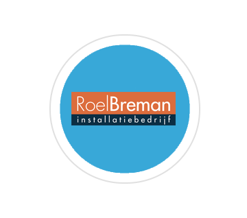

Ik wil graag leren om zelf een website te bouwen voor een groot bedrijf, en zelf zonder hulp van andere binnen een korte tijd dat te bouwen. Vorig jaar leerde ik voor instalatie dus voor de bouw, destijds heb ik ook mijn VCA gehaald dat is een certificaat voor op de bouw dat je veilig kan werken en dat je bewust ben van alle risico's of waar alle borden voor staan. Dat jaar moesten we ook stage lopen bij een bedrijfvan jou richting. Ik koos ervoor om bij Roel Breman stage te lopen, eerst zaten ze in Papendrecht daarna zijn ze verhuist naar Alblasserdam. Ik he het daar erg naar me zin gehad alleen heb ik toch de keuze gemaakt om voor ICT te gaan omdat mijn intereses daar meer bij liggen.
